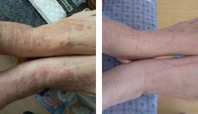
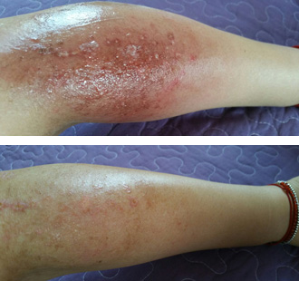
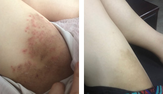
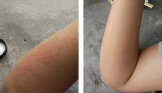

- 精彩评论
- 王欣 铜牌会员
- 关注板块：湿疹、健康、美容
- 帮助网友：3668 称赞：2117
- Maggie 普通会员
- 永远向前 普通会员
- 小罗莉娜 楼主
- 宅男杨老哥 普通会员
- A中国平安-李雅 普通会员
- 晋州李曼 普通会员
- 清风 铜牌会员
- 阳光 铜牌会员
- 欣記茶餐厅 普通会员
我和你的情况是一样的，发病史也有3、4年了，以前也用了好多湿疹软膏和去医院看了几次都没有什么用，总是反反复复，痒得难受。腿上有溃烂渗出结痂的症状，搞得夏天都不敢穿裙子。后来同事也是推荐了佰锦堂老师的方法给我，当时加了这个老师的微信（微信号是：ccculm2），在他们的指导下使用，止痒很快，修复效果很好，而且还有淡化黑色素沉着的功效。现在过了4个月也没出现复发的情况。

 2016-09-23 11:29:41
2016-09-23 11:29:41
湿疹的药物真的不能乱吃的，药物进入人体后会对角质组织进行杀菌或抑制真菌生长，对肝脏、肾脏的伤害很大，会有副作用。
2016-09-24
15:25:01
我身边也有很多朋友说过这个老师的湿疹法子，看到一楼的反馈貌似这个佰锦堂老师的方法效果好像还不错的样子，一直想试一下，纠结就是有点小贵，所以都还没入手尝试。
2016-10-03
18:27:29
前段时间一直有网友私聊我，询问我的病情状况。首先我在这里衷心感谢大家的关心，今天抽个空给大家反馈一下，当时我在得到李博士的推荐之后，添加了他们的微信，咨询了佰锦堂的在线顾问。通过几天的交流，我发现佰锦堂在线顾问对这种皮肤顽疾真的是特别专业，询问的过程也很有耐心，给出的建议和回答也比较中肯和真诚。所以我抱着尝试一下的心态，订购了的产品，根据他们的嘱咐下使用，目前已经得到完美的康复。康复后我特地的观察了近两个月都没有复发，才给大家做反馈的。所以大家遇到湿疹也不用太害怕，方法总会比问题多。如果有需要你们也可以去咨询一下，希望能帮助到大家！当时我加的就是李博士推荐的这个佰锦堂的老师微信：
好啦先说到这里，希望大家都可以有个健康幸福的生活！

2016-11-09
14:03:29
我患有阴囊湿疹也有4、5个年头了，特难受。有一次出差的时候，痒得实在受不了，搔抓了一下，刚好给女同事看到，特尴尬。无意中在网上找到大家推荐的这个湿疹膏，抱着试一试的心态。当时主要担心容易反复，会对身体造成不适，但是用了之后，发现这种顾虑都是多余的，用了一个多月已经好得差不多了，现在都停用了一段时间，也没有见反弹的情况，效果真的很好。立图为证，前方高能！

2017-03-03
20:57:25
得到大家的推荐后，死马当活马医，我也决定订购尝试一下，目前在用第二盒了，给大家说一下我的感受，用完第一盒感觉最明显的是就是手上的水泡、丘疹、开始消退，皮肤基本上不痒了，刚开始擦上去的时候会感觉有一股清凉的往皮肤里渗透，感觉很舒服，慢慢的就不再痒了，等我第二盒用完的时候我再来跟大家说我的感受。
2017-03-28
16:27:08

请问是否加上面的微信之后佰锦堂老师的就会给我做指导呢？我是慢性湿疹很多年了，我之前也是用了好多的办法，什么白醋陈醋、盐啊、艾叶、炉甘石，大蒜，什么的都试了个遍，还是那样。我想咨询慢性湿疹有什么好方法？
2017-04-09
17:28:03
确实是一个比较神奇的方法，我手上湿疹春节开始到现在已经近6个月了，反反复复。想不到用了十来天，效果立竿见影呐。会不会根治尚須等待时间上的考验，目前过去了一个月没有复发的迹象，不啰嗦，有图有真相！！这么好的实用分享，帮助了我们这些走弯路的人，向您致敬！

2017-06-30
10:05:31
真的这么有效果吗，我的湿疹也有2多年了，一直都不能彻底看好，看了楼上的介绍准备买来尝试一下。我工作还没多久，没什么钱，每分钱都要花在刀刃上啊，请问的在线微信号是：
对吧？
2016-11-05
11:37:12
问题相关